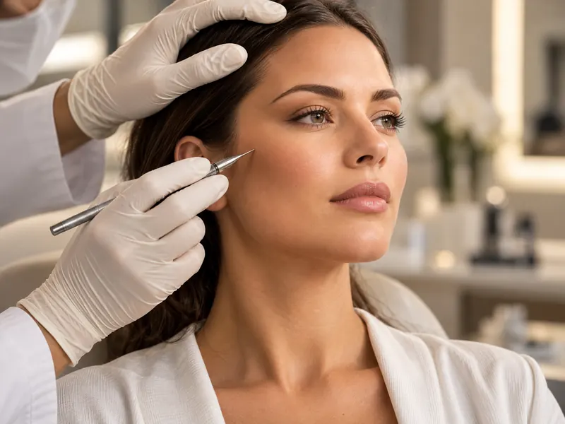
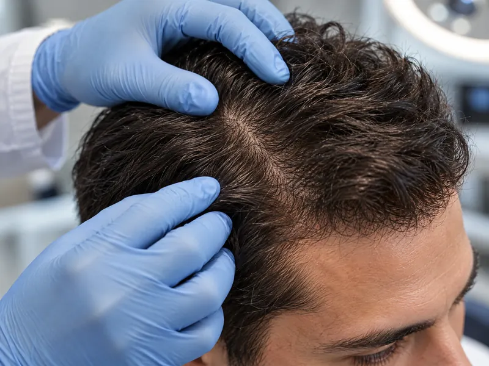
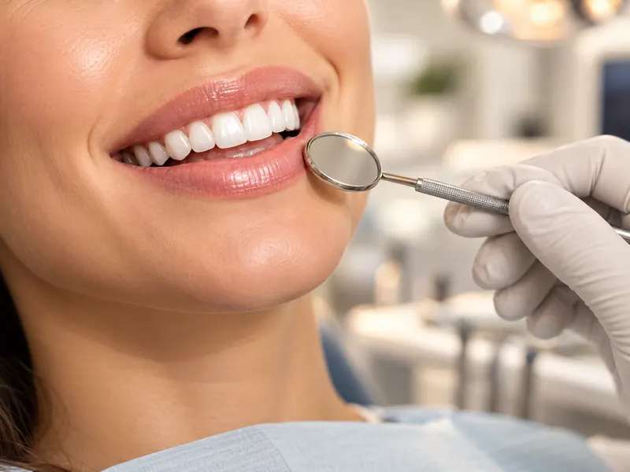
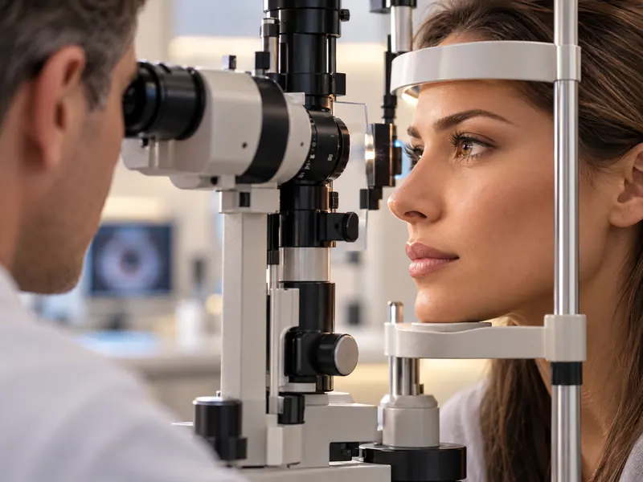
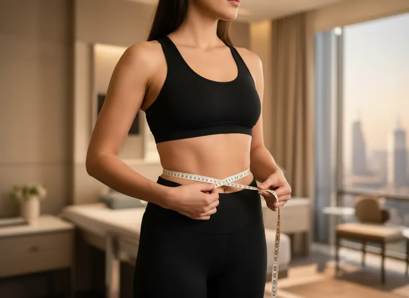

الدليل الشامل
دليل العلاجات
8 فئات طبية و70 صفحة علاجية. العناوين الفرعية للتصفّح فقط. لا تنشر threeeight35° أسعار العلاج، إذ يُسعَّر العلاج ويُدفع مباشرةً إلى العيادة أو المستشفى المستقل.
عرض جميع العلاجات
صفحات العلاجات الفردية متاحة حالياً باللغة الإنجليزية.

17 صفحة علاجية
الجراحة التجميلية والترميمية
إجراءات جراحية تشمل الوجه والثدي والجسم. استخدم هذا القسم لتحديد الإجراء المناسب لما يهمّك، بدلاً من التعامل مع الجراحة التجميلية كخدمة واحدة.
جراحات الوجه
جراحات الثدي
نحت الجسم وتنسيق قوامه

6 صفحات علاجية
زراعة الشعر
تقنيات استعادة الشعر والزراعة في مواضع محددة. يساعدك هذا القسم على التمييز بين تقنيات FUE وDHI وSapphire FUE وتصميم خط الشعر، دون الادعاء بأن تقنية ما أفضل من غيرها.

15 صفحة علاجية
علاجات الأسنان
علاجات الأسنان الترميمية والزراعة والتجميل وعلاج اللثة. تركّز هذه الصفحات على التشخيص ومراحل العلاج والمواد المستخدمة عند الحاجة وعدد الزيارات أو الرحلات التي قد تلزم.
زراعة الأسنان وإعادة تأهيل الفم بالكامل
تجميل الأسنان
ترميم الأسنان
طب الأسنان العام

6 صفحات علاجية
طب العيون وتصحيح النظر
رعاية العيون وتصحيح عيوب الانكسار. صفحات العلاجات المحددة منفصلة عن صفحات الأدلة العامة.
تصحيح النظر
جراحات العيون والإجراءات التخصصية

3 صفحات علاجية
جراحات السمنة وإنقاص الوزن
إجراءات الأيض وجراحات السمنة، بما فيها الجراحة الأولى والجراحة التصحيحية. تركّز هذه الصفحات على المتابعة طويلة الأمد والتغذية واستمرارية الرعاية.
7 صفحات علاجية
أطفال الأنابيب وعلاجات الخصوبة
تقييم الخصوبة ومراحل علاجها. تفصل هذه الصفحات بين مسارات أطفال الأنابيب والحقن المجهري ونقل الأجنة وحفظ الخصوبة.
تقييم الخصوبة وعلاجها
حفظ الخصوبة
8 صفحات علاجية
الفحوصات الصحية والكشف الوقائي
خدمات التشخيص والكشف المبكر. تركّز هذه الصفحات على نطاق الفحص ونتائجه وحدوده والمتابعة بعد عودتك.
الفحوصات الصحية العامة
الفحوصات التخصصية
8 صفحات علاجية
الجراحة العامة
إجراءات محددة في الجراحة العامة إلى جانب صفحات أدلة أشمل. لا تُعرض المصطلحات العامة على أنها عملية جراحية واحدة موحّدة.
الإجراءات الجراحية الشائعة
جراحات الجهاز الهضمي والبطن
ابدأ الخطوة الأولى
ابدأ استفسارك عن السفر العلاجي
أخبرنا بما ترغب في استكشافه، وسيساعدك فريقنا على فهم آلية التنسيق والخطوات العملية التالية.